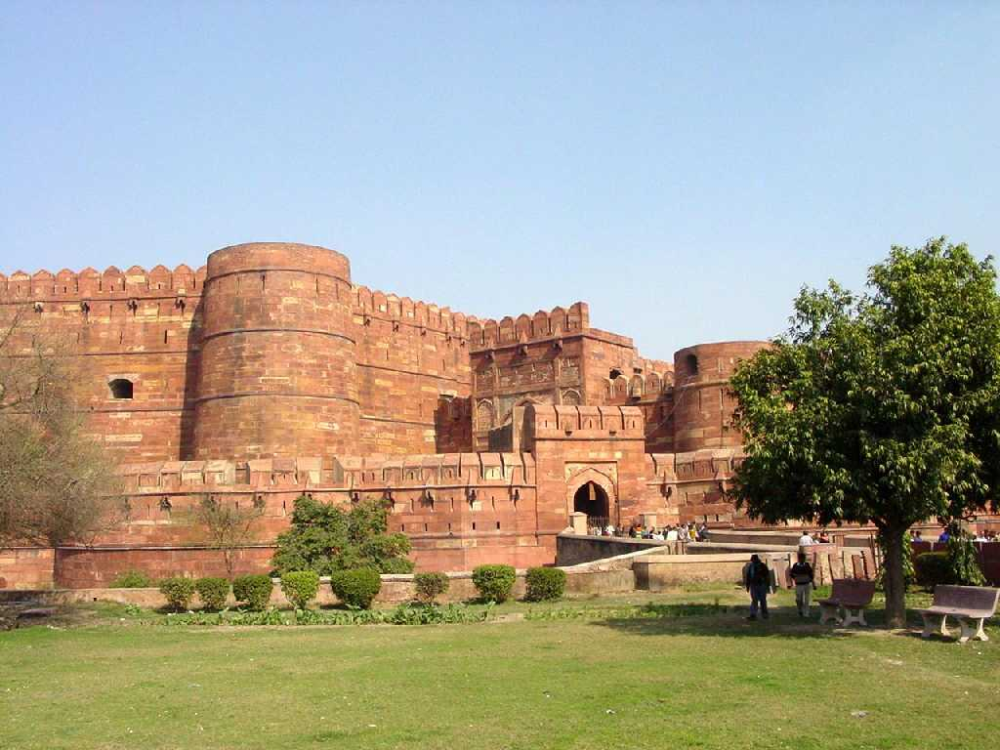
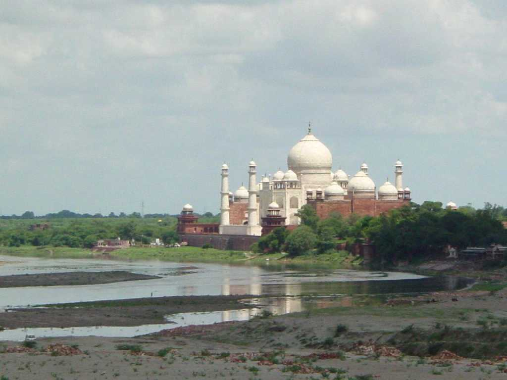
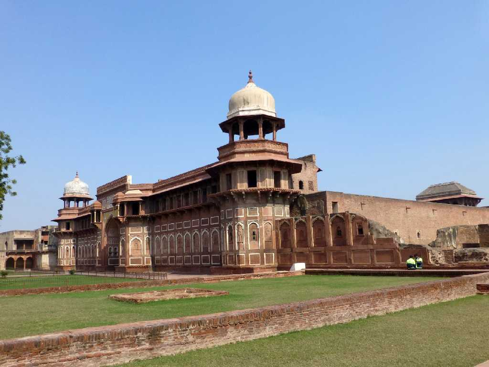
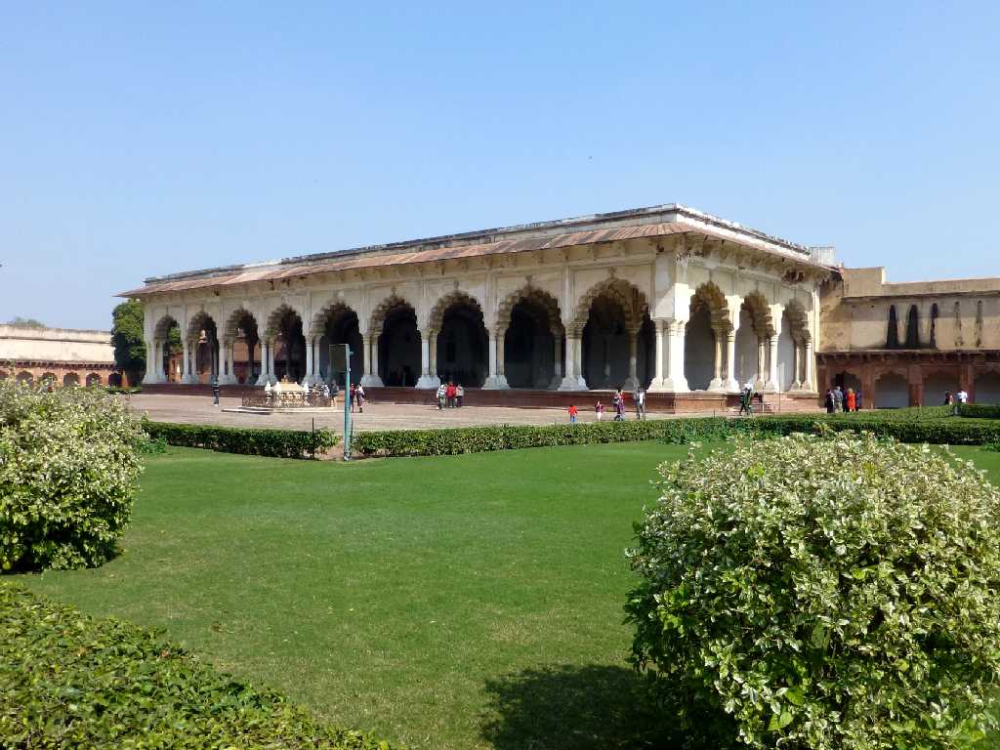
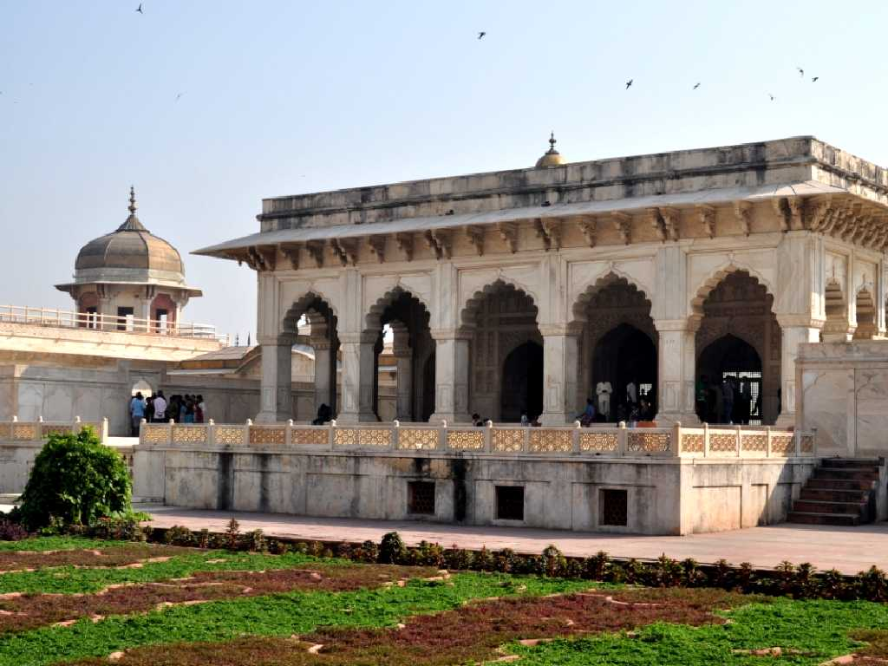
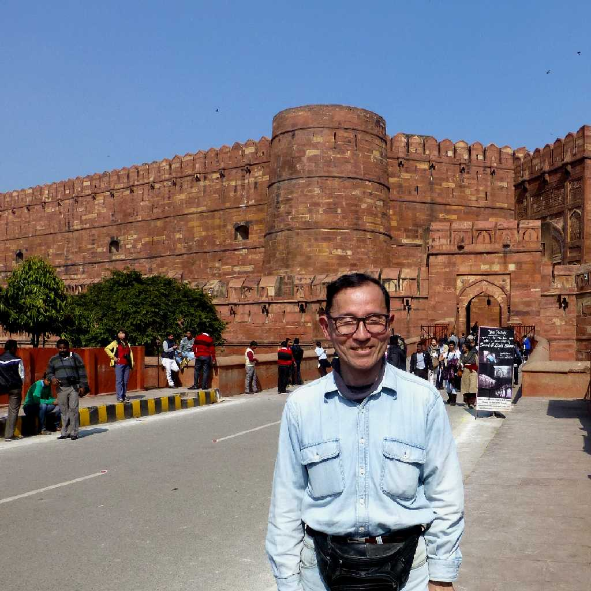

August 1985 Amar Singh Gate Agra Fort
周囲２.5ｋｍの城壁に囲まれたアグラ城はムガル帝国の居城として１５６４年から１５７４年にかけて第三代皇帝アクバルにより建設された

Taj Mahal from Agra Fort
アグラ城の囚われの塔から臨むタジマハルもまた美しい

Jahangir Mahal Agra Fort
約３０年ぶりの再訪問

Diwan I Aam
一般謁見の宮殿

Khas Mahal
貴賓謁見の宮殿

January 29 2015 Amar Singh Gate Agra Fort